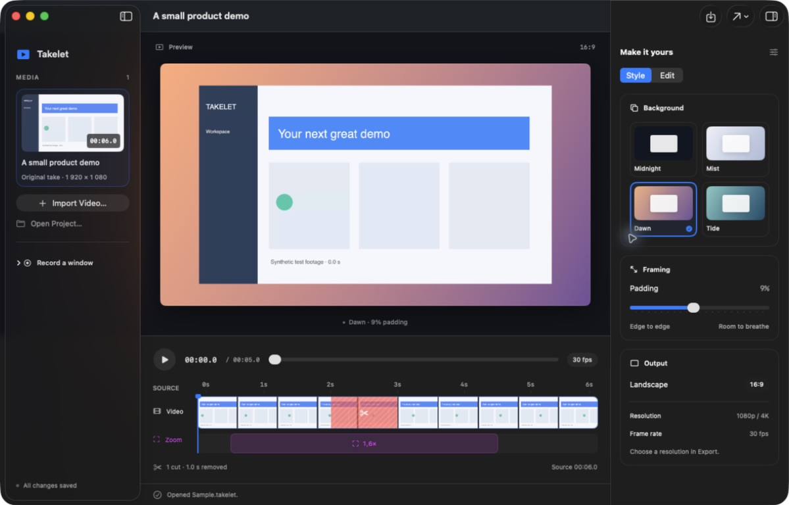

Keep your original take.
Import a recording, then remove the moments that slow it down. Restore any cut or undo a change. Your original media stays intact.
Developer preview Open source. Made for Mac.
A free, open-source screen recorder and demo editor for macOS. Cut the pauses, bring details closer, and turn your recording into a focused product demo.
macOS 15+ Apple Silicon MIT

A little editing goes a long way
Import a recording, then remove the moments that slow it down. Restore any cut or undo a change. Your original media stays intact.
Set a smooth zoom and focus point. Choose a background and adjust the padding to frame your walkthrough.
Preview your edits, save a portable project, and export a landscape MP4 at 1080p or 4K, 30 frames per second.
Your tools. Your take.
The editor works without an account or an application backend.
Recording, manual editing, saving, and export use native macOS frameworks. A portable .takelet project keeps its source recording together with its edits.
Want help spotting pauses? The experimental Codex command-line analyzer sends selected frames only when you run it. It uses your signed-in account’s shared Codex limits.
Read about AI & privacySmall beginnings, in the open
Takelet is an early developer preview. Help shape what comes next.
Ready for your first take
Download the DMG, drag Takelet into Applications, and open it. Import a recording to start shaping your demo.
v0.1.0 developer preview · Apple Silicon
Developer ID signed and notarized by Apple.
Prefer to build it yourself? Use Xcode’s Swift 6 toolchain and Python 3.
Build instructionsgit clone https://github.com/m0rg0t/takelet.git
cd takelet
sh scripts/build-app.sh
open build/Takelet.app